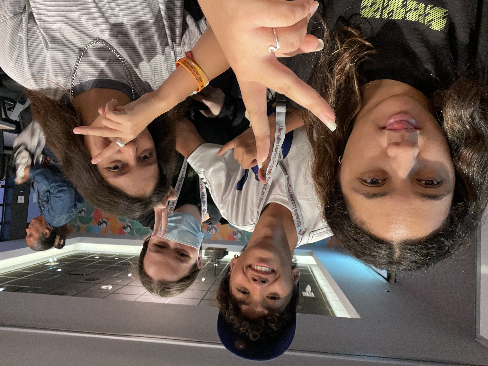

Summer Summit
Dave & Busters
Other than sititng through encouaging speeches, and playing meaningful games, we do something special on the last day of the summit, to go out with a bang!

Dave & Busters
My first time experiencing summit was during summer. The summer summit started off strange and nerve wracking, but when dinner started it turned out to be very fun and interactive. After dinner, we participated in a game called zombie tag! it was really fun. Later on in the week it just kept getting better. Maybe because it's from my own opinion, but I've longed for someone to understand what I go through, and to find out that this whole program understands is like a weight off my shoulders...